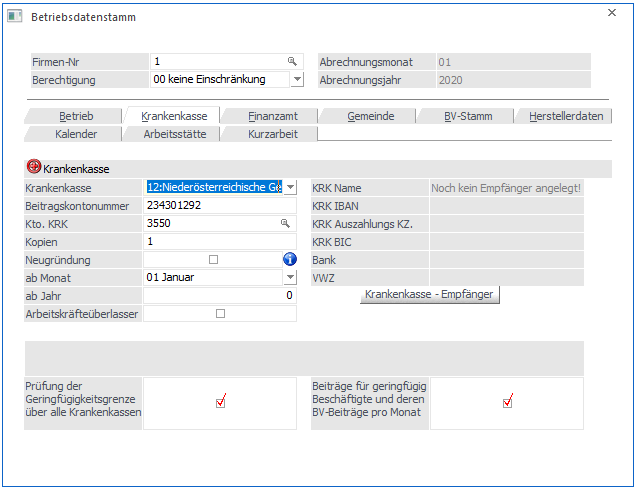
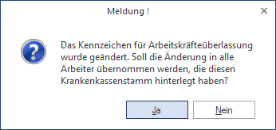

In diesem Register werden die Daten für die Krankenkasse erfasst.

Ø Krankenkasse
Aus der Auswahllistbox muss die für diesen Betrieb zuständige Krankenkasse gewählt werden.
Ø Beitragskontonummer
Beitragskontonummer (Achtung! - nicht mehr Dienstgeberkontonummer) bei der jeweiligen Sozialversicherung. Wenn das Feld leer bleibt, dann wird für diesen Betrieb auch kein SV-Beleg gedruckt. Wird hier ein Wert eingetragen, dann wird - egal, ob es eine Abrechnung gibt oder nicht - ein SV-Beleg (Auswertung der Abrechnung) gedruckt.
Ø Kto. KRK
Hier kann die Kontonummer eingetragen werden, auf die die Verbindlichkeiten an die Krankenkasse gebucht werden sollen. Durch Drücken der F9-Taste kann nach allen Kreditoren, die in der WinLine FIBU angelegt sind, gesucht werden. Wird hier eine Kontonummer eingetragen, wird für diese Krankenkasse auch eine KF-Buchung mit Offenen-Posten-Informationen erzeugt (derzeit nicht unterstützt).
Ø Kopienanzahl
Hier wird eingetragen, wie oft die Beitragsnachweisung (gültig bis 12/2018) für diesen Betrieb in Kopie gedruckt werden soll. Wird hier z.B. 2 eingetragen, dann werden das Original und 2 Kopien gedruckt. Wird hier 0 eingetragen, dann wird nur das Original gedruckt.
Ø Neugründung
Durch Aktivieren dieser Checkbox kann in den nachfolgenden Feldern
Ø ab Monat
Ø Jahr
das Monat der Neugründung eingegeben werden. Dadurch werden spezielle Vergünstigungen im Bereich der SV (keine UV- und WF-Beitrag für DG) und LS (kein DB/DZ) wirksam.
Wird diese Checkbox aktiviert, so steht auch der Info Butten rechts neben dieser Checkbox zur Verfügung. Drückt man den Info Button, öffnet sich eine Übersicht mit der Information welche Arbeitnehmer in welcher Periode mit den Begünstigungen von Neufög berücksichtigt werden.
Auszug aus dem Gesetz bezüglich NEUFÖG
Durch das NEUFÖG wird die Neugründung eines Betriebes nach dem 1. 5. 1999 und vor dem 1. 1. 2003 im Bereich der Sozialversicherung begünstigt. Neugründer müssen für die im Gründungsjahr beschäftigten Dienstnehmer die Dienstgeberanteile zum Wohnbauförderungsgesetz und die Beiträge zur gesetzlichen Unfallversicherung, unbeschadet des Bestandes der Pflichtversicherung in der Unfallversicherung, nicht entrichten.
Zeitpunkt der Neugründung
Das Gründungsjahr umfasst den Kalendermonat der Neugründung und die darauffolgenden 11 Kalendermonate dieses Jahres. Als Zeitpunkt der Neugründung gilt jener Kalendermonat, in dem der Betriebsinhaber erstmals nach außen werbend in Erscheinung tritt, das bedeutet, wenn die für den Betrieb typischen Leistungen am Markt angeboten werden. Wenn die Aufnahme von Dienstnehmern erst zu einem späteren Zeitpunkt nach der Neugründung des Unternehmens erfolgt, ist die Befreiung dennoch mit 12 Monaten ab der Neugründung befristet.
Antrag auf Befreiung
Für die Inanspruchnahme der durch das NEUFÖG vorgesehenen Befreiungen ist es erforderlich, dass der Neugründer bei den in Betracht kommenden Behörden den amtlichen Vordruck über die "Erklärung der Neugründung" (NeuFö 1) mit Beratungsbestätigung der jeweiligen gesetzlichen Berufsvertretung vorlegt. Der Vordruck ist nur dann gültig, wenn darauf durch die gesetzliche Berufsvertretung (z.B. Wirtschaftskammer) die Inanspruchnahme der verpflichtend vorgesehenen Beratung bestätigt ist. Wenn der Betriebsinhaber keiner gesetzlichen Berufsvertretung zugerechnet werden kann, muss die Beratung durch die SV-Anstalt der gewerblichen Wirtschaft in Anspruch genommen und bestätigt werden. Der amtliche Vordruck ist bei den Finanzämtern erhältlich.
Neugründung gültig ab 1.1.2012
Neufög gilt ab dem Gründungsmonat für ein Jahr für alle Arbeitnehmer. Nach Ablauf des ersten Jahres muss geprüft werden, wann der erste Arbeitnehmer eingetreten ist. Ist der Eintritt innerhalb der ersten drei Jahre nach Gründung erfolgt, so gilt Neufög über das erste Jahr hinaus ab dem ersten Eintritt für die ersten drei Arbeitnehmer die eingetreten sind.
Abschläge
A07 Rückverrechnung Wohnbauförderungsbeitrag
A08 Rückverrechnung Unfallversicherungsbeitrag
A09 Rückverrechnung Unfallsversicherungsbeitrag, wenn der Arbeitnehmer das 60. Lebensjahr vollendet hat
Meldeverpflichtung
Wird der neu gegründete Betrieb im Kalendermonat der Neugründung und in den folgenden 11 Kalendermonaten um bereits bestehende andere Betriebe oder Teilbetriebe erweitert, stehen die Befreiungen weder für den neu gegründeten noch für den damit verbundenen Betrieb zu. Bereits in Anspruch genommene Befreiungen fallen nachträglich (rückwirkend) weg und die Beiträge sind nachzuentrichten. Der Betriebsinhaber ist verpflichtet, diesen Umstand der Kasse unverzüglich mitzuteilen. (OÖ GKK, Dienstgeber-Info Nr 146/1999)
Auswirkungen im WinLine LOHN
Wenn die Checkbox "Neugründung" aktiviert wurde und das Monat und das Jahr der Neugründung hinterlegt wurde, dann werden am mBGM automatisch die entsprechenden Abschläge mit ihren Bemessungsgrundlagen und den entsprechenden Prozentsätzen ausgewiesen.
Ø Arbeitskräfteüberlasser
Wenn diese Option gesetzt ist, wird gemäß § 22c und 22d AÜG ein Arbeitskräfteüberlassungs-Beitrag eingehoben. Diese Option muss in den Betriebsdaten aktiviert werden, damit sie auch den AN entsprechend berücksichtigt werden kann. Wenn der Betriebsdatenstamm mit aktivierter Option gespeichert wird, erfolgt die Abfrage, ob diese Einstellung auf alle Arbeiter dieser Krankenkasse übernommen werden soll:

Ø Krankenkasse - Empfänger
Durch Anklicken des Buttons Krankenkasse - Empfänger können die Stammdaten bezüglich Adresse und Bankverbindung der Krankenkasse hinterlegt werden. Diese Information wird benötigt, wenn die Zahlungen an die Krankenkasse im Zuge der Monatsauswertungen aus dem System erstellt werden sollen (Clearingübergabe). Bei den Empfängerdaten sollten zumindest die Informationen Name und Adresse sowie die Bankverbindung (Register Detail) angegeben werden.
Wurde noch kein entsprechender Datensatz angelegt, wird bei Name "Noch kein Empfänger angelegt" angezeigt. Ansonsten wird über dem Button die entsprechende Information des Empfängers angezeigt.
Achtung:
Die nachfolgenden Optionen können nur beim Hauptbetrieb und nur dann gesetzt werden, wenn noch keine ELDA-Meldungen im aktuellen Abrechnungsjahr erstellt wurden. Eine Änderung der Checkbox "Beiträge für geringfügig Beschäftigte und deren BV-Beiträge pro Monat" sollte nur nach Rücksprache mit der ÖGK durchgeführt werden. Die Checkbox ist wirtschaftsjahrunabhängig und gilt für alle Abrechnungsjahre!
Ø Prüfung der Geringfügigkeitsgrenze über alle Krankenkassen
Ist diese Option aktiviert, wird die Geringfügigkeitsgrenze betreffend Pauschalierung über alle geringfügigen Beschäftigte des Mandanten ermittelt. Ist die Option deaktiviert, dann wird die Geringfügigkeitsgrenze pro Krankenkasse ermittelt.
Ø Beiträge für geringfügig Beschäftigte und deren BV-Beiträge pro Monat
Ist diese Checkbox aktiv, dann erfolgt die Zahlung der der Beiträge (SV und BV) der geringfügig Beschäftigten jedes Monat und nicht nur im Dezember des Abrechnungsjahres. Ist diese Checkbox nicht aktiv und die Zahlung erfolgt erst mit der Periode Dezember, dann muss für die BV Beiträge ein Zuschlag entrichtet werden (dieser wird automatisch am mBGM ermittelt).
Hinweis:
Die Checkbox steuert ausschließlich den Zahlungszeitpunkt. Eine Meldung der Geringfügigen erfolgt seit 01. Jänner 2019 immer monatlich.